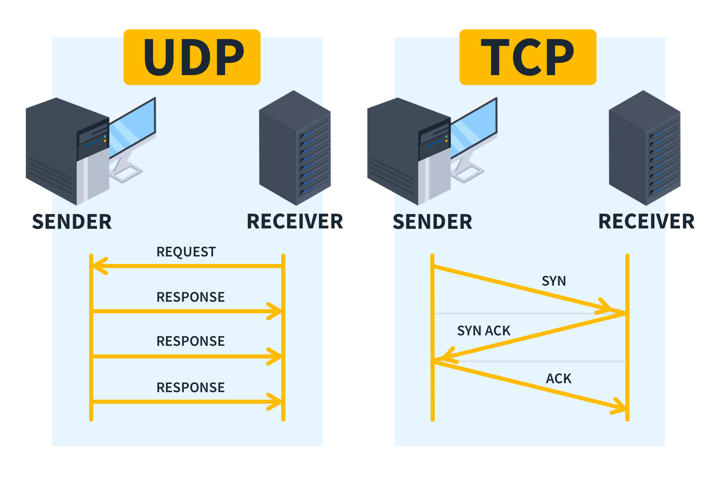

7. Familias de protocolos
El estudio de las tecnologías de redes se simplifica estructurando las distintas tecnologías involucradas en las comunicaciones en familias de protocolos de comunicación en las que se definen perfectamente las relaciones de unos con otros.
7.1. Conceptos preliminares
La comunicación entre dispositivos de una red implica realizar muchas funciones diferentes: identificar los equipos, transmitir los datos, controlar posibles errores, establecer comunicaciones, determinar el destino de la información, etc.
Para simplificar esta complejidad, las redes se organizan mediante capas. Cada capa se encarga de determinadas funciones y utiliza los servicios proporcionados por las capas inferiores para ofrecer sus propios servicios a las capas superiores.
Esta organización permite dividir un problema complejo en partes más sencillas y facilita el desarrollo de protocolos y dispositivos de red.
A. El concepto de capa o nivel
Una capa es un nivel dentro de una arquitectura de red que agrupa determinadas funciones relacionadas con la comunicación.
Las capas se organizan de forma jerárquica:
- Cada capa tiene unas funciones específicas.
- Una capa utiliza los servicios proporcionados por la capa inferior.
- Una capa proporciona servicios a la capa superior.
- Los detalles internos de una capa pueden modificarse sin que necesariamente sea necesario modificar las capas superiores, siempre que se mantengan los servicios y las interfaces definidos.
Por ejemplo, cuando un usuario visita una página web intervienen diferentes funciones:
- Una capa se ocupa de la comunicación de la aplicación, por ejemplo mediante HTTP o HTTPS.
- Otra se ocupa del transporte de los datos, utilizando protocolos como TCP o UDP.
- IP se encarga del direccionamiento y del encaminamiento entre redes.
- Las capas inferiores se ocupan de transmitir los datos a través del medio de comunicación utilizado.
Importante
El objetivo de dividir la comunicación en capas es reducir la complejidad, asignando determinadas funciones a cada nivel y estableciendo relaciones claras entre ellos.
No existe un único número de capas válido para todas las arquitecturas. Por ejemplo, el modelo OSI define siete capas, mientras que el modelo utilizado habitualmente para describir TCP/IP utiliza una organización diferente.
B. Los servicios
Una capa proporciona determinados servicios a la capa situada por encima de ella.
Un servicio describe qué puede hacer una capa para la capa superior, sin necesidad de que esta conozca cómo se realiza internamente.
Por ejemplo, una aplicación puede solicitar a una capa de transporte que proporcione una comunicación fiable. La aplicación no necesita conocer todos los mecanismos utilizados para conseguirlo.
Por tanto:
- Un servicio describe las funciones que una capa ofrece a otra.
- La capa superior utiliza esos servicios sin necesidad de conocer todos sus detalles internos.
- Una misma función puede implementarse de diferentes formas siempre que se mantenga el servicio ofrecido.
Ejemplo
Una aplicación necesita enviar información a otro equipo.
- La aplicación entrega los datos a la capa de transporte.
- La capa de transporte proporciona el servicio necesario para transportar esos datos.
- Las capas inferiores se encargan de continuar el proceso hasta transmitir la información por la red.
La aplicación no necesita conocer cómo se transmiten físicamente los bits.
C. Los protocolos
Un protocolo es un conjunto de reglas que define cómo deben comunicarse dos dispositivos o dos entidades de una misma capa.
Estas reglas pueden definir, entre otros aspectos:
- El formato de los mensajes.
- La información que debe contener cada mensaje.
- El orden en que se intercambian los mensajes.
- Cómo se inicia y finaliza una comunicación.
- Cómo se detectan o gestionan determinados errores.
Los protocolos permiten que dispositivos desarrollados por diferentes fabricantes puedan comunicarse siempre que implementen las mismas especificaciones.
Ejemplo
HTTP define las reglas que utilizan un cliente y un servidor web para intercambiar información.
Un navegador puede comunicarse con un servidor web de un fabricante completamente diferente porque ambos implementan el protocolo HTTP.
Importante
Un servicio indica qué puede ofrecer una capa, mientras que un protocolo define las reglas que utilizan las entidades de una capa para comunicarse.
D. La interfaz entre capas
Las capas necesitan comunicarse entre sí para utilizar los servicios que proporcionan.
La interfaz entre capas define cómo una capa utiliza los servicios proporcionados por la capa inferior y cómo se relaciona con ella.
Por tanto:
- La capa superior solicita servicios a la capa inferior.
- La capa inferior proporciona esos servicios.
- La interfaz establece las reglas necesarias para utilizar dichos servicios.
Ejemplo
Una aplicación puede solicitar a la capa de transporte que envíe determinados datos.
La aplicación no necesita conocer cómo funciona internamente TCP o UDP. Solo necesita utilizar los servicios que la capa de transporte proporciona a través de la interfaz correspondiente.
Importante
Protocolo e interfaz no son lo mismo.
- El protocolo define cómo se comunican entidades de una misma capa.
- La interfaz define cómo una capa utiliza los servicios de otra capa.
E. La arquitectura de red
La arquitectura de red es la organización de las capas, servicios, protocolos e interfaces que intervienen en la comunicación de una red.
Una arquitectura define, por tanto:
- Qué capas existen.
- Qué funciones realiza cada capa.
- Qué servicios proporciona cada capa.
- Qué protocolos se utilizan para realizar esas funciones.
- Cómo se relacionan las diferentes capas.
Una arquitectura bien definida permite desarrollar equipos y programas que puedan comunicarse siguiendo unas mismas reglas.
Ejemplo
La arquitectura utilizada en Internet se basa en la familia de protocolos TCP/IP.
En ella intervienen numerosos protocolos, cada uno con una función determinada:
- HTTP/HTTPS: comunicación utilizada por la Web.
- TCP: transporte fiable y ordenado de datos.
- UDP: transporte sin conexión y con menor sobrecarga.
- IP: direccionamiento y encaminamiento entre redes.
- Ethernet y Wi-Fi: comunicación en las redes locales.
F. Interoperabilidad
La interoperabilidad es la capacidad de diferentes sistemas, dispositivos o aplicaciones para comunicarse y trabajar conjuntamente mediante protocolos y estándares compatibles.
La interoperabilidad es especialmente importante en las redes porque los dispositivos pueden proceder de diferentes fabricantes.
Ejemplo
Un ordenador con Windows puede comunicarse con un servidor Linux y acceder a un sitio web alojado en otro sistema operativo.
Esto es posible porque los diferentes sistemas implementan protocolos y estándares comunes, como IP, TCP, DNS y HTTP/HTTPS.
Importante
Dos dispositivos son interoperables cuando pueden comunicarse y trabajar conjuntamente utilizando protocolos y estándares compatibles, aunque hayan sido desarrollados por fabricantes diferentes.
G. Los sistemas abiertos
El concepto de sistema abierto está relacionado con la utilización de estándares y protocolos que permiten la interoperabilidad entre sistemas diferentes.
Un sistema abierto no depende exclusivamente de tecnologías propietarias de un único fabricante, sino que utiliza interfaces, protocolos o estándares suficientemente documentados para permitir la comunicación y la integración con otros sistemas.
Ejemplo
Internet es un ejemplo de entorno basado en estándares abiertos.
Un ordenador, un teléfono móvil y un servidor pueden comunicarse aunque utilicen sistemas operativos y hardware de diferentes fabricantes, porque utilizan protocolos comunes de la familia TCP/IP.
Importante
El uso de estándares abiertos facilita la interoperabilidad y permite que diferentes fabricantes desarrollen equipos y aplicaciones capaces de comunicarse entre sí.
Resumen de conceptos
Estos conceptos están relacionados, pero no significan lo mismo:
| Concepto | ¿Qué significa? |
|---|---|
| Capa | Nivel que agrupa determinadas funciones de comunicación. |
| Servicio | Función que una capa ofrece a la capa superior. |
| Protocolo | Reglas utilizadas para la comunicación entre entidades de una misma capa. |
| Interfaz | Forma en que una capa utiliza los servicios de otra capa. |
| Arquitectura | Organización de capas, servicios, protocolos e interfaces de una red. |
| Interoperabilidad | Capacidad de sistemas diferentes para comunicarse y trabajar conjuntamente. |
| Sistema abierto | Sistema basado en estándares y protocolos que facilitan la interoperabilidad. |
7.2. Familias de protocolos históricas
Antes de la adopción generalizada de TCP/IP, existieron otras familias de protocolos de red desarrolladas para distintos sistemas operativos y fabricantes. Algunas de las más conocidas fueron IPX/SPX, NetBEUI y AppleTalk.
Actualmente estas tecnologías están prácticamente en desuso y han sido sustituidas por TCP/IP, que se utiliza de forma generalizada en las redes actuales. Su estudio tiene principalmente un interés histórico y permite comprender la evolución de las redes informáticas.
7.2.1. IPX/SPX y NetWare
NetWare fue un sistema operativo de red desarrollado por Novell y ampliamente utilizado en redes empresariales, especialmente durante las décadas de 1980 y 1990.
Utilizaba la familia de protocolos IPX/SPX:
- IPX (Internetwork Packet Exchange): se encargaba del direccionamiento y del envío de paquetes entre redes.
- SPX (Sequenced Packet Exchange): proporcionaba una comunicación fiable y ordenada.
Otros sistemas operativos, como Microsoft Windows, incorporaron compatibilidad con IPX/SPX mediante NWLink.
La arquitectura habitual de NetWare estaba basada en servidores dedicados, que proporcionaban servicios y recursos a los equipos cliente, como archivos e impresoras.
7.2.2. NetBEUI
NetBEUI (NetBIOS Extended User Interface) fue un protocolo desarrollado inicialmente por IBM y utilizado posteriormente principalmente en redes locales de Microsoft.
Estaba pensado para redes pequeñas y sencillas. No necesitaba utilizar direcciones IP para identificar los equipos, por lo que no estaba diseñado para realizar el encaminamiento entre diferentes redes.
NetBEUI trabajaba junto con NetBIOS, que proporcionaba servicios para la comunicación entre aplicaciones de red.
Con la expansión de TCP/IP, NetBEUI dejó de utilizarse de forma generalizada.
7.2.3. AppleTalk
AppleTalk fue una familia de protocolos desarrollada por Apple para sus ordenadores Macintosh.
Su objetivo era facilitar la comunicación entre equipos y, especialmente, el intercambio de archivos y el uso compartido de impresoras. Una de sus características era que requería muy poca configuración por parte del usuario.
Con la adopción generalizada de TCP/IP, AppleTalk fue abandonado y dejó de formar parte de las versiones modernas de los sistemas operativos de Apple.
7.3. Familia de protocolos TCP/IP
La familia TCP/IP es el conjunto de protocolos utilizado como base de Internet y de la mayoría de las redes actuales.
Su nombre procede de dos de sus protocolos más conocidos:
- TCP (Transmission Control Protocol): proporciona un transporte fiable y ordenado de los datos.
- IP (Internet Protocol): se encarga del direccionamiento y del encaminamiento de los paquetes entre redes.
Sin embargo, TCP/IP no está formada únicamente por estos dos protocolos. Incluye numerosos protocolos que realizan diferentes funciones.
7.3.1. Características de TCP/IP
Entre las principales características de la familia TCP/IP se encuentran:
- Interoperabilidad: permite la comunicación entre dispositivos y sistemas operativos de diferentes fabricantes.
- Escalabilidad: puede utilizarse tanto en redes pequeñas como en redes de alcance mundial.
- Interconexión de redes: permite comunicar diferentes redes mediante dispositivos de encaminamiento, como los routers.
- Independencia del medio: puede utilizarse sobre diferentes medios y tecnologías, como Ethernet, Wi-Fi, fibra óptica o redes móviles.
- Estándares abiertos: sus protocolos están documentados públicamente y pueden ser implementados por diferentes fabricantes.
- Uso generalizado: es la familia de protocolos utilizada en Internet y en la mayoría de las redes actuales.
7.3.2. Principales protocolos
La familia TCP/IP está formada por numerosos protocolos. Algunos de los más importantes son:
| Capa | Protocolo | Función principal |
|---|---|---|
| Internet | IP | Direccionamiento y encaminamiento de paquetes entre redes. |
| Transporte | TCP | Transporte fiable y ordenado de datos. |
| Transporte | UDP | Transporte sin conexión y sin garantía de entrega, pero con menor sobrecarga. |
| Aplicación | DNS | Traducción de nombres de dominio a direcciones IP. |
| Aplicación | DHCP | Asignación automática de parámetros de configuración de red. |
| Aplicación | HTTP/HTTPS | Comunicación utilizada por la Web. |
| Internet | ICMP | Envío de mensajes de control y diagnóstico de red. |
Importante
TCP/IP es una familia de protocolos, no un único protocolo. El nombre procede de TCP e IP, pero la familia incluye muchos otros protocolos que realizan funciones diferentes.

En el caso del protocolo UDP, ante una petición enviada por el emisor, el receptor (de existir y de haber recibido la petición) devolverá una respuesta. Sin embargo, UDP no establece ni garantiza una conexión, ni asegura que los datos lleguen correctamente.
En cambio, con el protocolo TCP sí existen. Según se ve en la imagen anterior:
-
SYN (Synchronize): El cliente inicia la conexión enviando un segmento SYN al servidor. Básicamente dice:
«Quiero establecer una conexión TCP contigo».
-
SYN-ACK (Synchronize + Acknowledgment): El servidor responde con SYN-ACK. Significa:
«He recibido tu solicitud y acepto establecer la conexión. También quiero sincronizar nuestra comunicación».
-
ACK (Acknowledgment): El cliente responde con ACK, confirmando la respuesta del servidor:
«He recibido tu respuesta. La conexión está establecida».
Por tanto, el protocolo TCP es similar a UDP, pero con pasos previos que aseguran la conexión y evitan la pérdida de datos y la ausencia de respuestas a algunas peticiones. Ambos protocolos se usan a menudo, pero en situaciones diferentes:
-
TCP: cuando se necesita que los datos lleguen correctamente y en orden.
Ejemplo: cargar una página web mediante HTTP/HTTPS. Si se pierde parte de la información, TCP la retransmite.
-
UDP: cuando se prioriza la rapidez y la baja sobrecarga, y se puede tolerar la pérdida de algún dato.
Ejemplo: una videollamada o un videojuego online, donde es preferible perder algún paquete antes que esperar a retransmitirlo y aumentar la latencia.